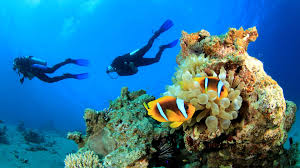
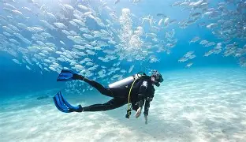
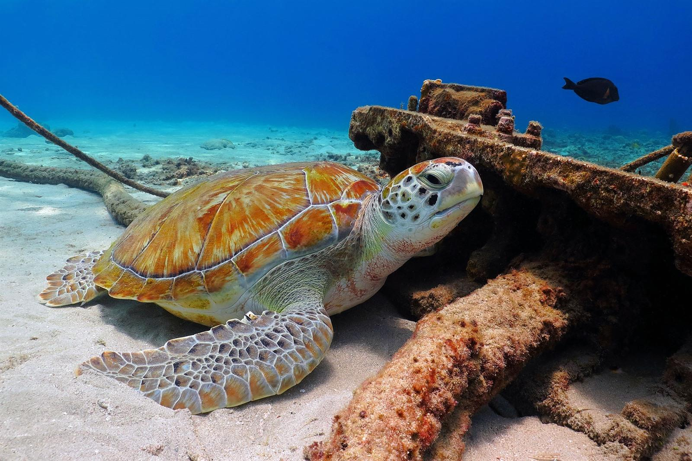

wat is duiken?
Duiken is het langdurig verblijf onder water, meestal met hulpmiddelen zoals een ademluchtfles. Tot halverwege de twintigste eeuw werd voornamelijk beroepsmatig gedoken, maar het is tegenwoordig ook een groeiend tijdverdrijf. Duiken zonder ademlucht noemen we het vrijduiken. We spreken van technisch duiken als er geen mogelijkheid is om direct naar het oppervlak te stijgen zoals bij een decompressieverplichting (het verplicht uitvoeren van decompressiestops tijdens het opstijgen om decompressieziekte te voorkomen) en het duiken in grotten of wrakken. Tijdens het duiken ademt de duiker ademlucht uit een cilinder (samengeperste lucht). Tijdens de duik ademt de duiker lucht bij een druk die gelijk is aan de waterdruk van de diepte waarop hij zich bevindt. Hoe dieper hij gaat, hoe hoger de druk waarbij hij ademt. Lucht bestaat grotendeels uit zuurstof en stikstof. In de longen lossen de gassen in de ademlucht gedeeltelijk op in het bloed. Dit gaat in een evenwichtsreactie, waarbij naarmate de druk hoger is, er meer van de gassen oplost. Het lichaam verbruikt de zuurstof voor verbranding, maar laat de stikstof ongemoeid: die blijft opgelost in het lichaamsvocht. Na verloop van tijd zal de stikstofconcentratie in het lichaamsvocht zo hoog worden, dat de oplossing verzadigd raakt. Als de duiker op die diepte blijft zal hij netto geen stikstof meer opnemen in zijn lichaamsvocht. Het verband tussen oplosbaarheid van gassen en de druk wordt beschreven door de Wet van Henry.


duikgrens

Er is geen effectieve dieptegrens voor recreatief duiken. Duikorganisaties zoals PADI en CMAS hanteren getrapte grenzen. In duikclubs wereldwijd wordt typisch 18 tot 20 meter voor beginnende duikers aangehouden (CMAS 1*, PADI OWD), en 30 meter voor ervaren duikers (CMAS 2*, PADI AOW). Mits de nodige opleidingen en voorzorgmaatregelen kan met perslucht tot 40 meter (CMAS 3*, PADI met Deep Dive training). Tot deze dieptes kan veilig met ademlucht (binnen de duiksport spreekt men meestal nog van perslucht) en nitrox gedoken worden, met gebruik van recreatieve duikapparatuur.
veiligheid
Duiken is een activiteit die niet ongevaarlijk is. Het water is immers geen natuurlijke leefomgeving voor de mens. Drukverschillen tussen de omgevingsdruk en de druk in luchthoudende (lichaams)holten kunnen een barotrauma veroorzaken. Andere gevaren zijn verdrinking, decompressieziekte, stikstofnarcose en zuurstofvergiftiging, naast de scherpe uiteinden van rotsen e.d. en diverse gevaarlijke zeedieren en planten die voor problemen kunnen zorgen (tot en met de dood).